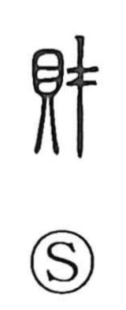

財

Kun: takara | On: zai, sai
wealth ・ assets ・ property ・ treasure
Explanation
財 is a phono-semantic compound. 貝 portrays the revered koyasugai—shells from the southern seas associated with safe childbirth—which, being extremely precious, served as ancient currency and thus signal valuables. 才 supplies the sound sai and also suggests “material.” Together they denote valuable goods—money, wealth, treasure. By phonetic extension, 財 was also used for the senses of 才 and 纔 (“a little”), and of 裁 (“to judge or cut out; to plan, consult”), as reflected in forms like 財察 (“settling a case”) and 財成 (“managing, handling”).